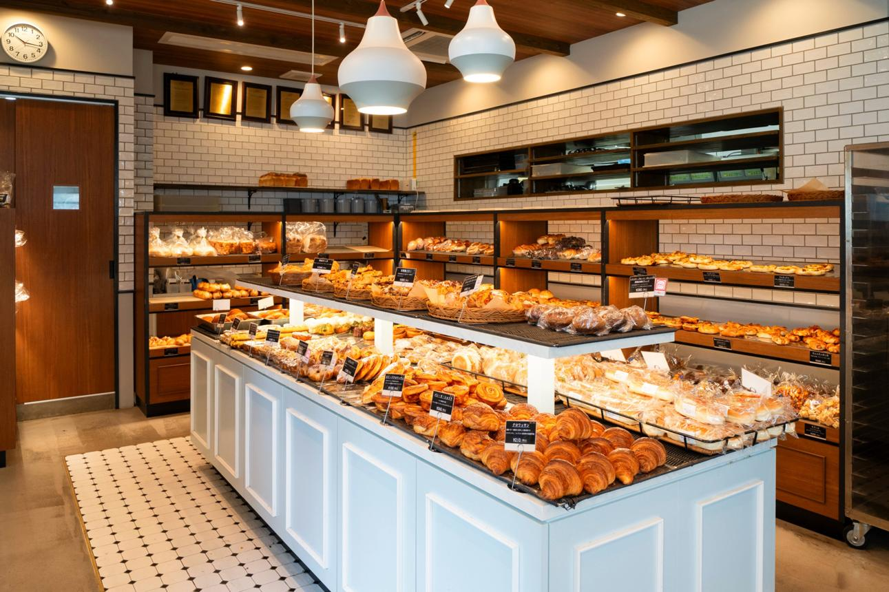
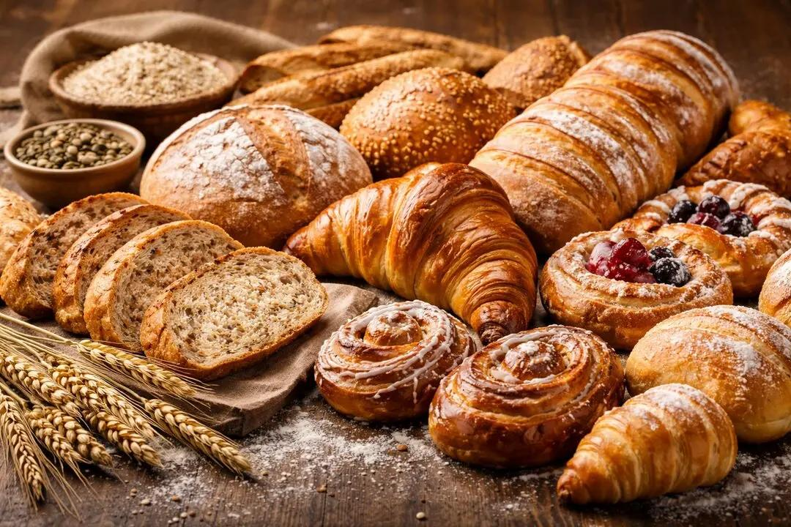
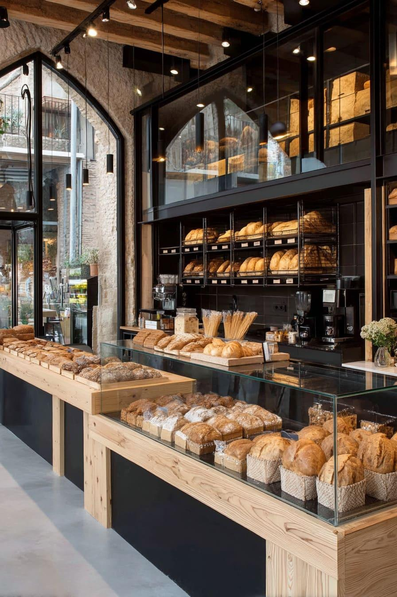

Pães
Pães fresquinhos preparados todos os dias.



Seja bem-vindo à nossa padaria em atividade desde 1990, onde a tradição do pão artesanal se une à praticidade e ao sabor em todas as horas do dia! Oferecemos uma linha completa de produtos. Venha conhecer os nossos diversos produtos como pães, bolos, bolachas, doces e salgados.
Pães fresquinhos preparados todos os dias.

Bolos caseiros e recheados para todos os momentos.

Salgados deliciosos preparados artesanalmente.